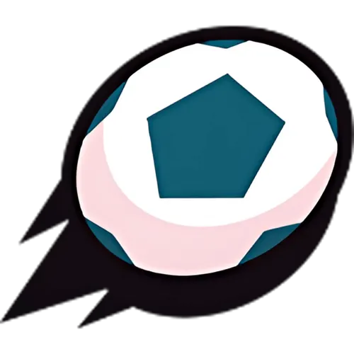
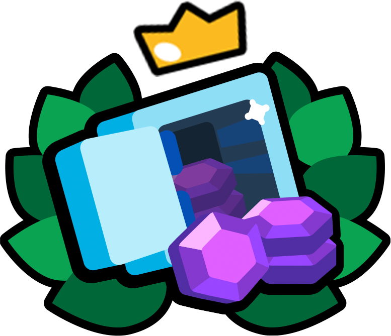
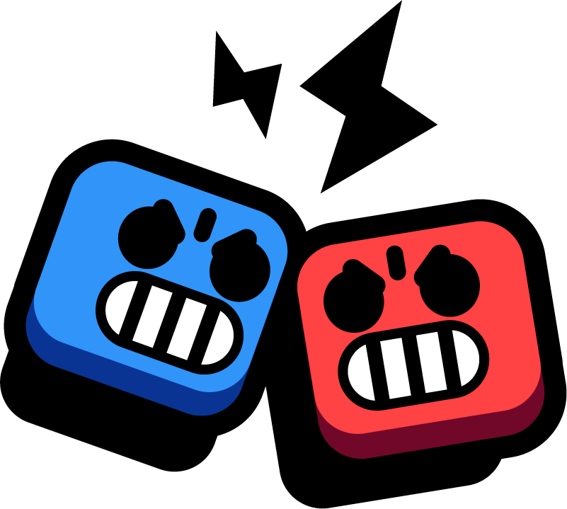
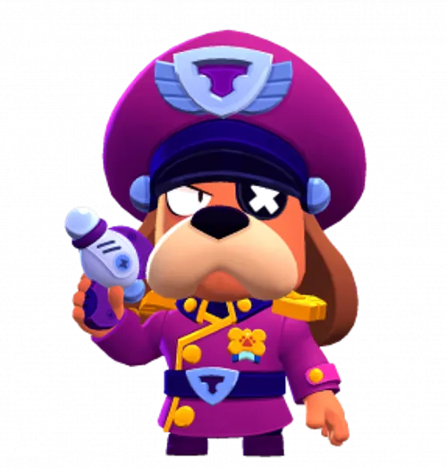
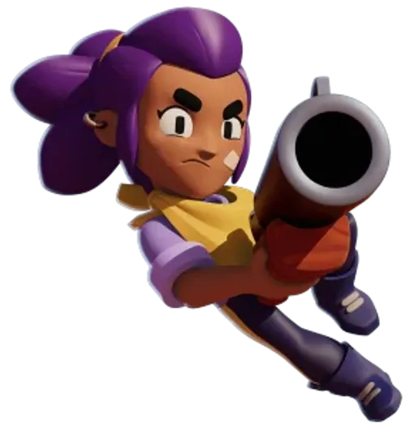
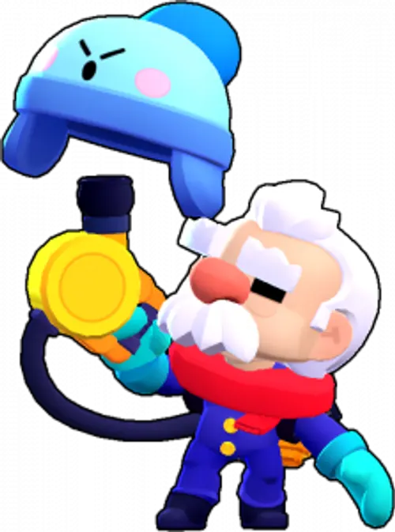
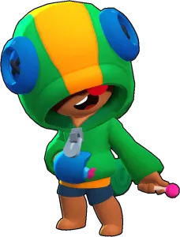
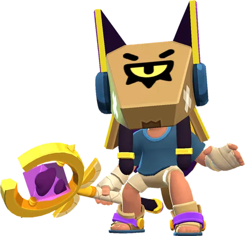
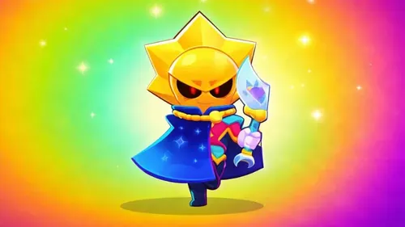

Brawl Stars é um jogo de ação e estratégia em tempo real desenvolvido pela Supercell.
Brawl Stars atualmente conta com mais de 100 personagens, cada um com traits especificas e designs unicos que os tornam carismaticos e memoraveis
Modos de Jogo
Bem-vindo aos modos de jogo do Brawl Stars! Aqui você verá informações sobre alguns dos modos de jogo disponíveis no jogo!
Combate
Combate é um modo Battle Royale onde o objetivo é ser o ultimo jogador vivo!
O mapa do combate é gigante, e nele possuem varias caixas de poder, ao quebra-las e coletar o cubo verde, você ganha um bônus de vida e dano
esses cubos podem ser obtidos após derrotar jogadores também, existem moitas que escondem os jogadores, então cheque elas sempre que possivel para não ser
pego de surpresa, e o mapa vai encolhendo com o passar do tempo, forçando os jogadores ao centro do mapa
Fute-Brawl
Marque 2 gols para vencer! (VALE TUDO)

Caso você e seus aliados estejam todos no ataquetenha certeza que o oponente não possua um personagem com alta mobilidade!
pois brawlers assim podem facilmente pegar a bola e subir no mapa! o mapa também pode ser quebrado, então brawlers com pouco alcance podem sofrer conforme
o jogo progride! Você sempre usa uma munição para chutar a bola, com algumas pequenas exceções em alguns brawlers, porém você também pode chutar com sua super
chutando a bola mais rapido e longe, perfeito para marcar gols de meio de campo quando nenhum inimigo estiver por perto!
Roubo
Destrua o Cofre Inimigo para vencer!

O cofre do modo roubo é um alvo estatico, então brawlers que possuem ataques com alto dano e longo alcance são otimas opções, como o Coronel Ruffs!
após perder 25% de vida, o cofre ganha um escudo de invencibilidade por 3 segundos. então guarde seus ataques mais fortes quando o cofre estiver longe de um dos threesholds
(25%, 50% e 75%) para garantir o maximo de dano possivel!
Duelos
O modo 1 contra 1 oficial do Brawl Stars

Cada player começa com seus primeiros brawlers, quem perder avança pro segundo, quem perder com o terceiro brawler primeiro, perde.
Tenha um trio de brawlers sempre compostos por pelo menos um assasino, um anti-assasino (brawlers que conseguem empurrar os assasinos pra tras)
e um brawler anti-tanque, visto que matchups (confrontos entre brawlers especificos) são muito importantes nesse modo, e ter um trio balanceado é a melhor maneira
de garantir que seu time inteiro não seja evaporado por um boneco só do inimigo!!
Alguns Personagens chamativos do Brawl Stars
Aqui você pode encontrar informações sobre os pesonagens mais legais de Brawl Stars.
Cornonel Ruffs
Poucas pessoas sabem, porém o Coronel Ruffs foi um dos primeiros personagens a serem desenhados para o jogo
O que é curioso visto que ele foi lançado apenas em 2021, três anos após o lançamento global do jogo!

Suas Habilidades incluem ataques que ricocheteiam entre as paredes, uma super que causa dano aos inimigos ao mesmo
tempo que deixa para tras um drop que impulsiona a vida e o dano dos aliados que o pegarem
Shelly
A Brawler Inicial do jogo! Tem uma skin rara que apenas quem jogou em 2018 possui!

Shelly, por se tratar da brawler inicial, tem um estilo de gameplay simples, apenas uma arma de medio alcance que causa mais dano quanto mais
perto o inimigo estiver, sua super é a mesma coisa de seu ataque principal, porém ele é maior, causa mais dano, e pode quebrar paredes!
Gale
Esse brawler foi o primeiro brawler da extinta raridade cromatica! brawlers dessa raridade eram obtidos no Brawl Pass! que na epoca podia ser
obtido com gemas! a raridade cromatica foi removida em 2023 e os brawlers que estavam nela foram reajustados entre as raridades epica, mitica e lendaria

Gale é um personagem simples, seu ataque principal é uma parade de bolas de neve, e sua super é uma grande revoada de neve que empurra os inimigos
para tras!
Leon
Leon foi o primeiro Brawler a ser lançado após o lançamento global do Brawl Stars!

Leon é um brawler do tipo assasino, ou seja, ele consegue derrotar outros brawlers muito rapido!, seu ataque principal consiste
em uma saraivada de shurikens que dão mais dano quanto mais proximo o alvo! e sua super é a ferramenta perfeita pra fazer kills, pois se trata de uma bomba
de fumaça capaz de deixar ele invisivel por até 8 segundos! (porém, ele sairá da super antecipadamente caso ataque)
Finx
Finx é o unico brawler do jogo com a mecanica de mexer com o tempo!, sua mecanica foi tão inovadora que os jogadores
ficaram surpresos com o fato de sua raridade ser apenas mitica, e não lendaria.

Finx joga 3 projeteis a medio/longo alcance, o projetil do meio é maior, e causa mais dano, o que o torna especial é sua super! onde Finx joga um
projetil no chão que cria uma zona que desacelera os projeteis inimigos, e impulsionam os projeteis aliados (inclusive os de Finx!)
Sirius
Sirius foi o brawler de numero 100!!

Sirius é o segundo brawler Ultra Lendario do jogo, e não é atoa! seu ataque principal consiste de dois projeteis que se encontram no final do ataque
o primeiro se trata de uma lua que segue em linha reta, e o segundo é um sol, que vai por cima das paredes! toda vez que Sirius acerta um oponente, sua barra das sombras
carrega, e quando ela enche, Sirius pode usar sua super, onde ele sumona um clone dos brawlers que ele acertou, os clones possuem menos vida e dano que os brawlers
originais, porém sirius pode invocar até 6 delas no campo!